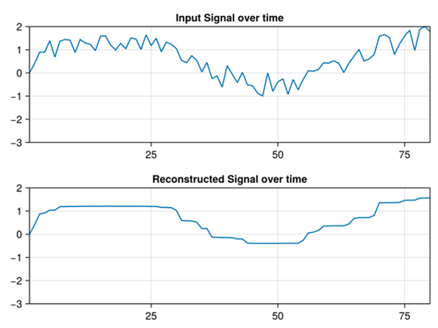

Total Variation Reconstruction
Introduction
Problems in signal processing typically involve filtering, denoising and smoothing a signal. In this example we'll look at total variation reconstruction of a 1-D signal. We'll consider the optimization problem below:
\[\begin{aligned} \text{minimize}\qquad & \left \lVert \hat{x}-(x+v) \right \rVert _2 + \lambda \left \lVert D\hat{x} \right \rVert _1 \end{aligned}\]
This is a multi criterion (bicriterion) problem since there are two variables we want to optimize against. All multi criterion problems require a tradeoff and the parameter $\lambda$ enables this. By increasing $\lambda$ we encourage a solution that aims for $\left \lVert D\hat{x} \right \rVert _1$ small. The converse is also true, reducing $\lambda$ will encourage $\left \lVert \hat{x}-(x+v) \right \rVert _2$ small.
In this example, $\hat{x}$ is the decision variable and $x+v$ is the 1-D input signal for some noise $v$ which we want to denoise.
How to run the example
- Ensure that you have the necessary dependencies installed. These can be installed by executing the following commands:
julia> ]
pkg> activate .
pkg> add ConicSolve
julia> exit()- Run the example from the command line
julia example.jlExplanation
The $L_1$ constraint can be realized by introducing an auxiliary variable $\epsilon_1$ which is nonnegative. This is achieved with two sets of inequality constraints with respect to the Nonnegative Orthant, $\epsilon_1 \ge D\hat{x}$ and $\epsilon_1 \ge -D\hat{x}$.
The $L_2$ constraint can be realized by introducing an auxiliary variable $\epsilon_2$ and setting the equality constraint $\hat{x} - x + \epsilon_2 = 0$.
We also need to set the equality constraints for the values of the input signal $x$.
Finally, solve the Total Variation Reconstruction problem as a Quadratic Programming problem is as follows:
\[\begin{aligned} \text{minimize}\qquad & (\epsilon_2)^2 + \lambda \epsilon_1 \\ \text{subject to}\qquad & \hat{x} - x + \epsilon_2 = 0 \\ \qquad & \epsilon_1 \ge D\hat{x} \\ \qquad & \epsilon_1 \ge -D\hat{x} \end{aligned}\]
Data Acquisition
This is a simple toy problem setup. No data has been imported in this example.
$x+v$ is white noise generated using Julia's default pseudo-random number generator.
Solve the problem
Get the solution
After reconstructing the signal we should get something like this.
